3 Assumption Checks
3.1 Correlations between variables
Presented in order of suspected dimensions

3.2 Determinant V1
Check on the whether the model will be overdetermined Should aim for a determinant > .00001 (Field et al., 2012)
Our model may be overdetermined. Determinant < 0.00001
With more variables included there is the danger for multi-collinearity. First step is to remove items that have a correlation =>0.8
Correlations > .80 | ||
|---|---|---|
rowname | colname | value |
AIMES_15 | AIMES_2 | 0.80 |
DISPO_28 | AIMES_2 | 0.81 |
AIMES_7 | AIMES_6 | 0.82 |
AIMES_6 | AIMES_7 | 0.82 |
AIMES_2 | AIMES_15 | 0.80 |
DISPO_28 | AIMES_15 | 0.80 |
AIMES_2 | DISPO_28 | 0.81 |
AIMES_15 | DISPO_28 | 0.80 |


Legend
- green = Being in nature allows me to do the things I like doing most
- red = My favorite place is in nature
Removed items with high intercollinearity
Still may be overdetermined… Determinant = < 0.00001
Look at other items that might be a problem…
3.4 Proportion of Variance
(KMO test) Measures the amount of variance in items
Overall, our data is suitable for factor analysis (overall MSA > 0.8 are adequate). Data MSA = 0.966313394570753
There are a couple of items that are of concern:
Item | KMO |
|---|---|
DISPO_32 | 0.89 |
DISPO_38 | 0.82 |
DISPO_36 | 0.84 |
- DISPO_32 (The noise of crickets gets on my nerves [reversed])
- DISPO_38 (I have mourned (or could imagine mourning) the loss of a pet)
- DISPO_36 (Pets are part of the family)
3.5 Ceiling and Floor Items
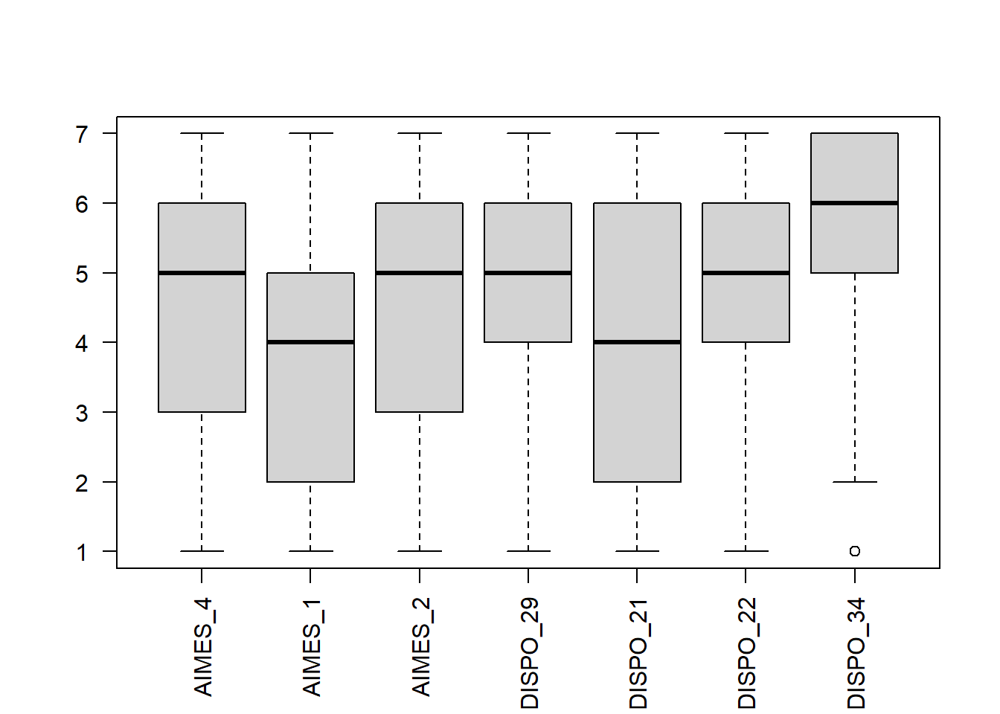
Dispo_34 might have a ceiling effect going on (Listening to the sounds of nature makes me relax)
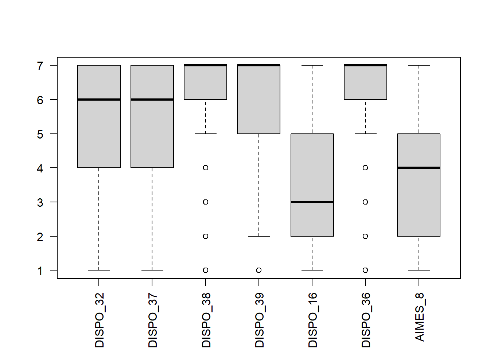
Celiing effects with * Dispo_38 (I have mourned (or could imagine mourning) the loss of a pet) * Dispo_39 (It makes me upset to see an animal that was hit by a car) * Dispo_36 (Pets are part of the family)
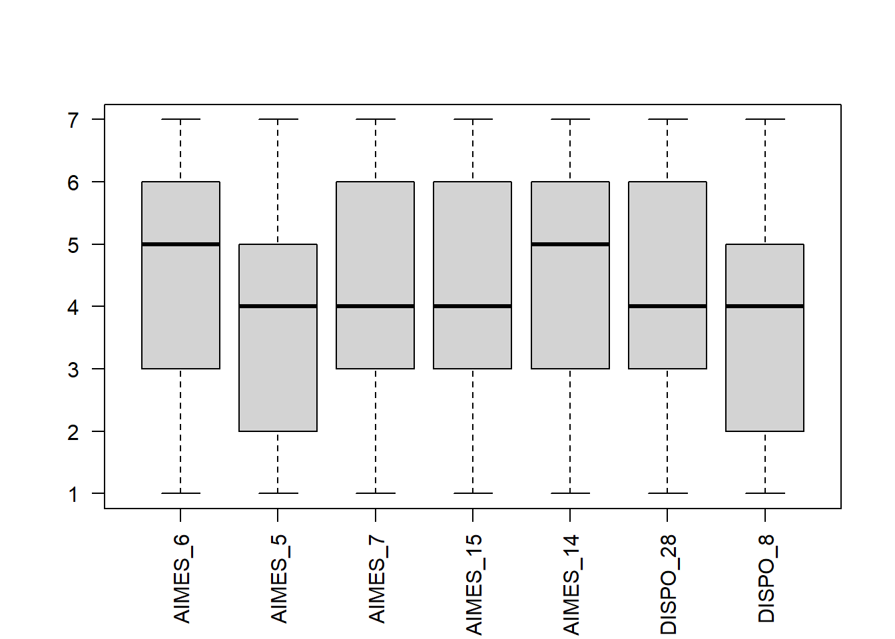
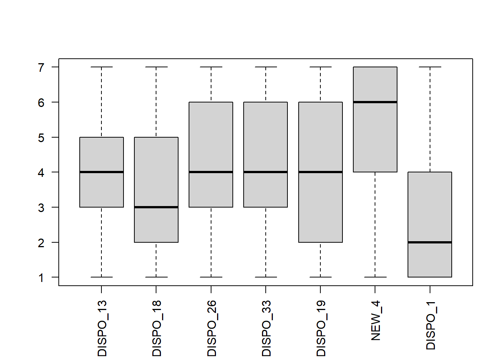
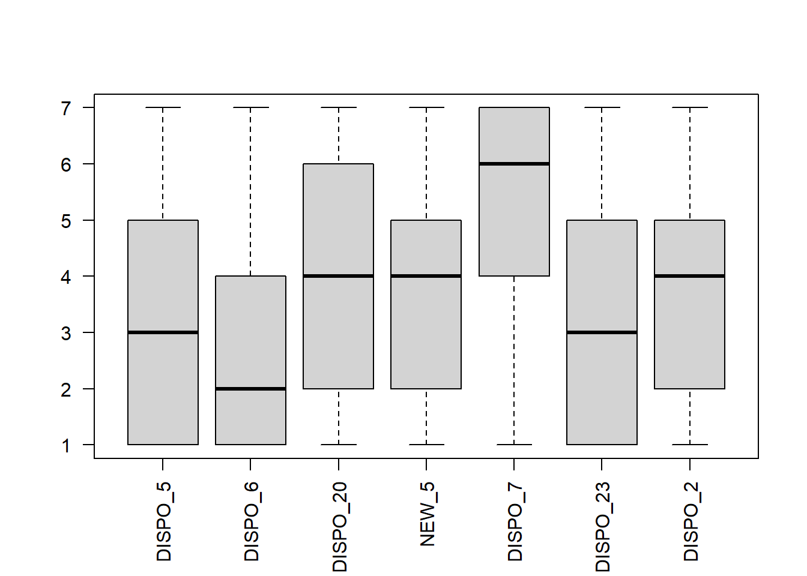
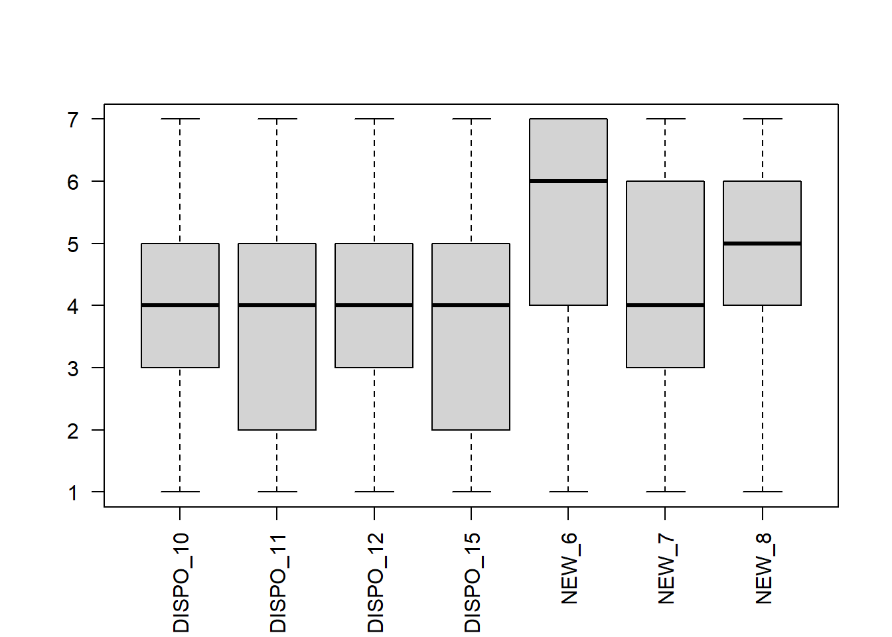
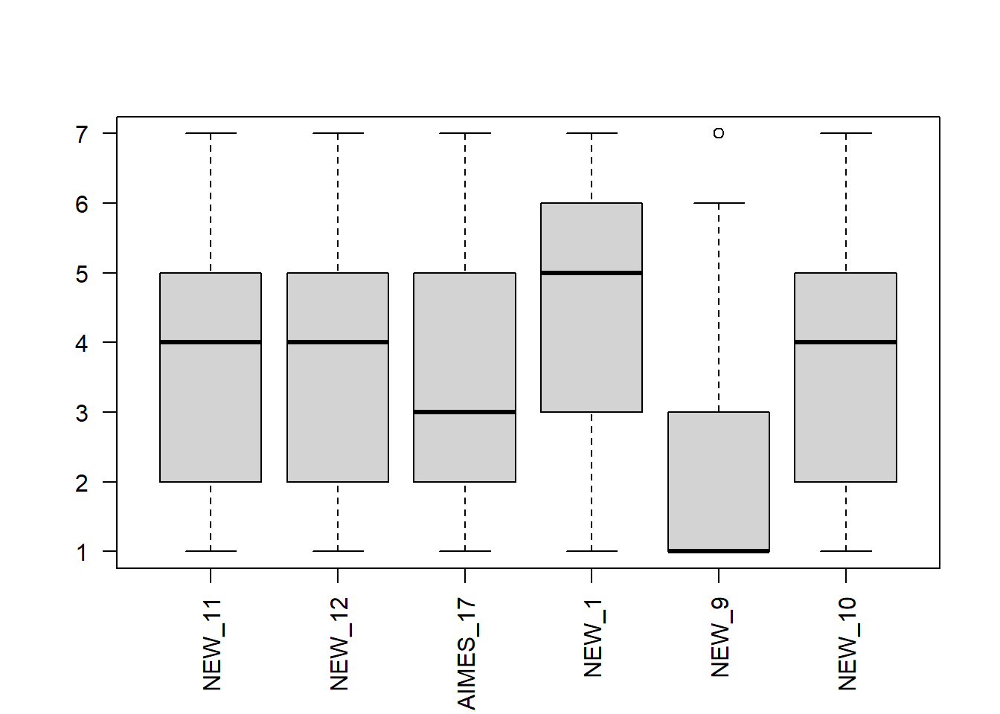
New_9 has a floor effect (I regularly engage in a ritual practice that involves nature (e.g., full moon or solstice rituals))
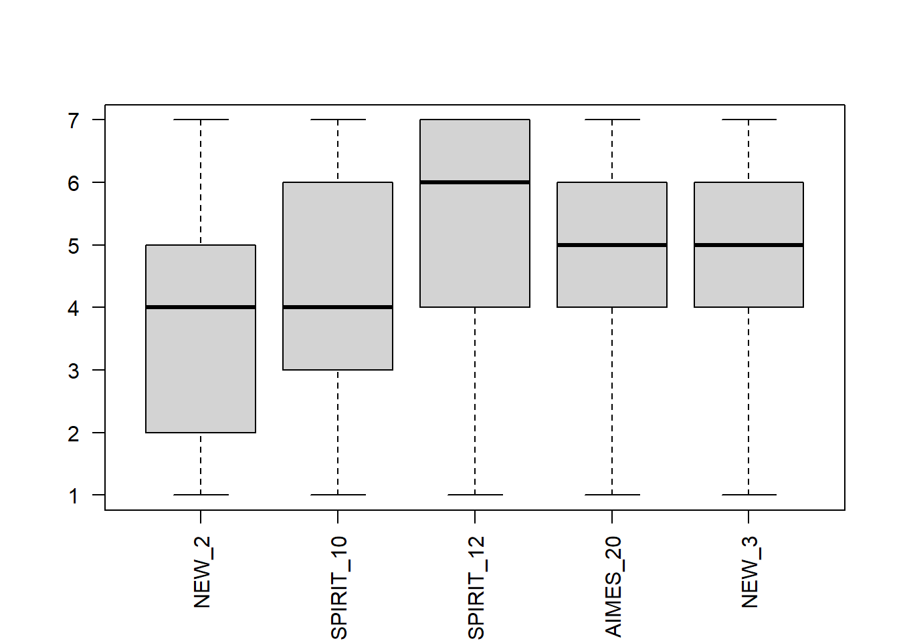
3.6 Skewedness
We can also look at the distribution of variables to remove any items that have a high skewedness Presented in order of suspected dimensions
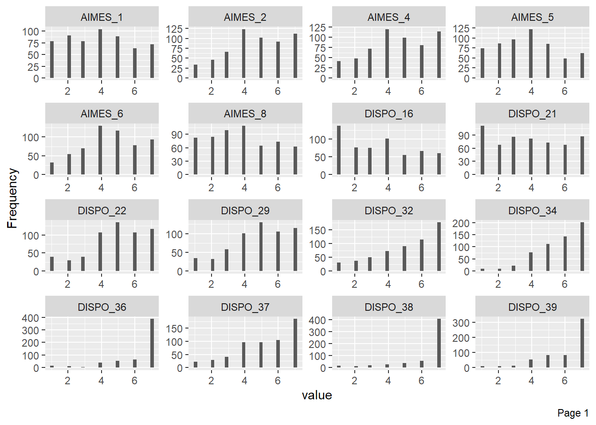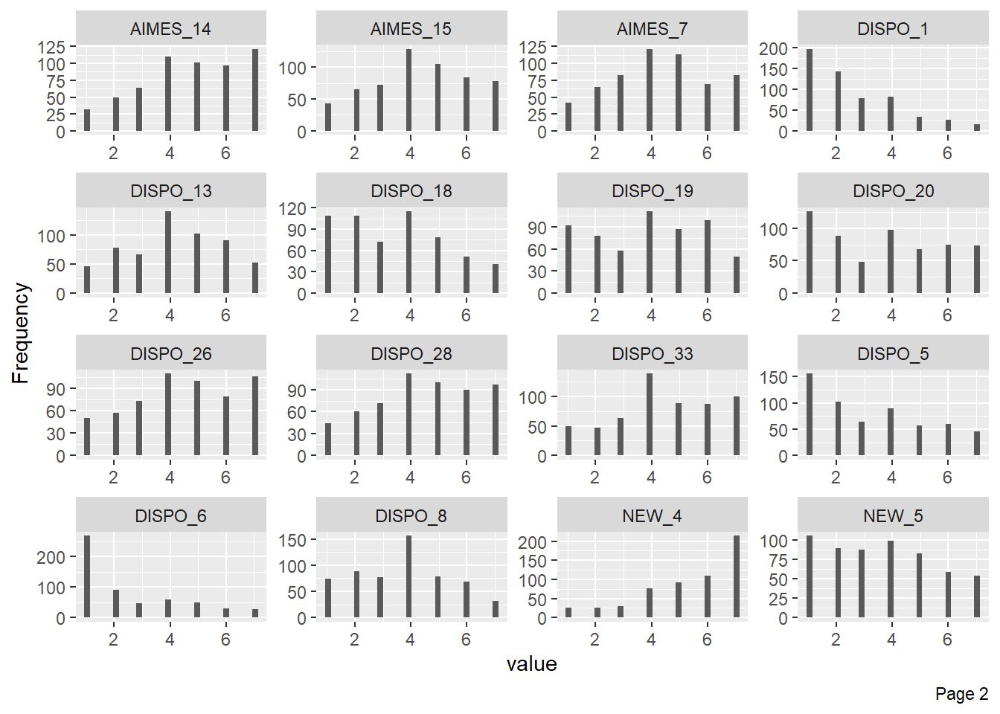 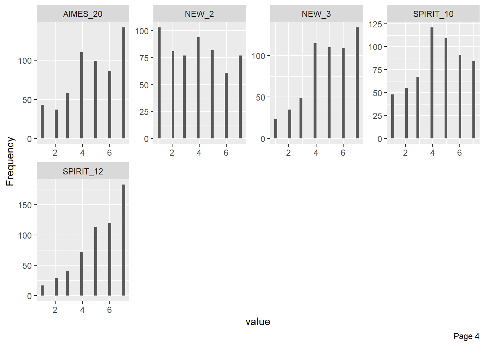
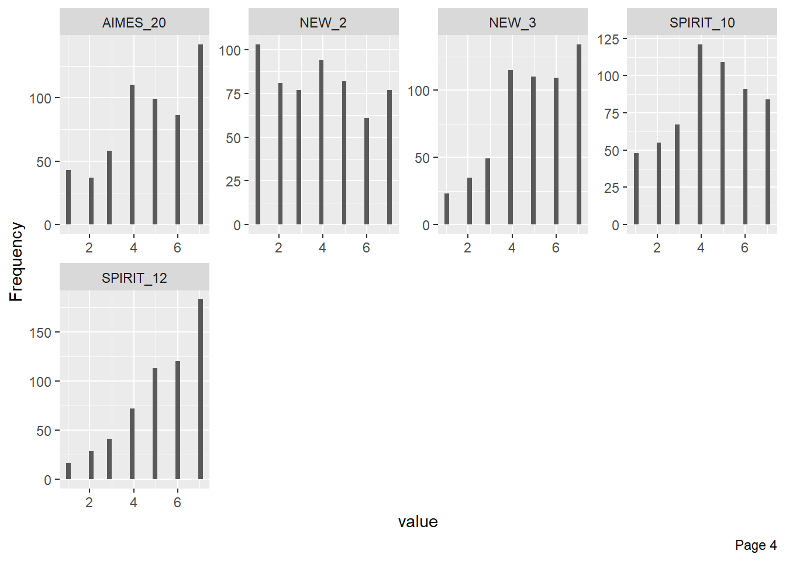
Variables with non-normal distribution (after eyeballing the above graphs)
- DISPO_38
- I have mourned (or could imagine mourning) the loss of a pet
- DISPO_39
- It makes me upset to see an animal that was hit by a car
- DISPO_36
- Pets are part of the family
- DISPO_1
- When encountering an animal I mimic their behaviour
- DISPO_5
- When I am outside on grass, sand, or soil, I often take off my shoes to feel the ground on my feet
- DISPO_6
- I talk to plants
- DISPO_7
- I am careful to not step on snails
- NEW_9
- I regularly engage in a ritual practice that involves nature (e.g., full moon or solstice rituals)
- AIMES_18
- Everything in nature is connected (e.g., animals, plants, humans, water, air, land, fire, etc.)
Removing items of concern…
Still may be overdetermined… Determinant = < 0.00001 But we will look at the EFA anyway